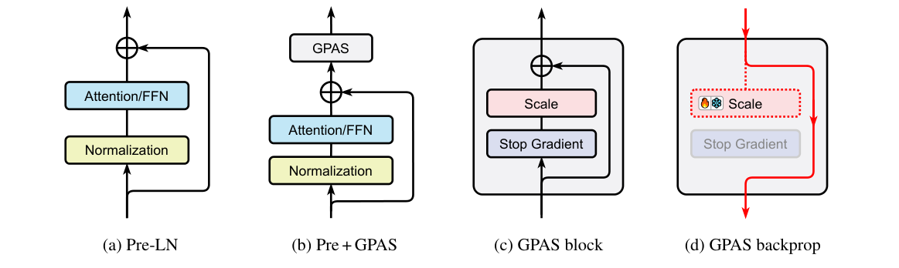

Figure1
GPAS: Accelerating Convergence of LLM Pretraining via Gradient-Preserving Activation Scaling
GPAS：分开前向激活缩放与反向梯度传递的预训练方法
Chen等，Figure1（arXiv:2506.22049v2，PDF第2页，CC BY4.0）：a/b对比归一化先于模块的残差子层及其GPAS插入位置；c前向从残差激活减去缩放的stop-gradient分支；d红线显示自动微分的反向通路绕过该分支，虚线门可学习或冻结。局部规则不证明整网梯度不消失，四面板、全部箭头及标签完整保留。